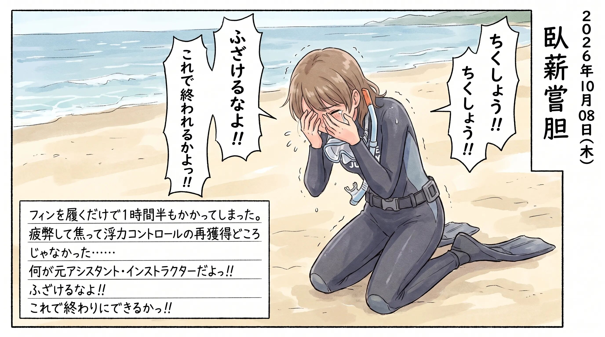
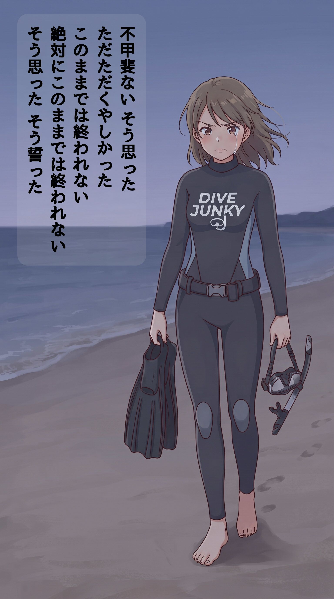

The road Orz passed by 2026 年 10 月
10 月 08 日 ( 木 )
Dive #225 屈辱の日

今は以前と違って障がいがあるから仕方ない、とか言うなよ！？絶対に言うなよ！？
ぼくがダイビングのことで泣いたのはこれが３度目になる。
初めて泣いたのが Master Scuba Diver コース中に Open Water のスキルがまるでできないことがわかったとき。あのときは師匠に、知り合いの漁師がカツオ漁の船が乗せてくれるっていってるから行こうぜ、と誘われたのを断って一人宿で悔しくて泣いていた。
次は 1994 年に NAUI ITC に落ちたとき。ぼくはもうあまりお金が残っていなかったからもう ITC を受けるのは無理かも知れないって ITC が終わった最終日に口にした。そのときに ITC 同期 (同期か？落ちたのに？でもインストラクターに無事なった仲間はみんなお前も同期だと言ってくれた) の一人が悔しくねぇのか！？って俺の顔を真剣な目で見て言った。悔しくないはずがない、そう口にした途端に涙が溢れた。
努力は足りなかった。でも努力してこなかったわけじゃなかった。努力が結果に結びつかなかったのだから、悔しくないはずがなかった。
そして今回の須磨。
今回も準備が足りなかった。足りなかったけど……準備が足りないのは自分が悪いのだけれど……それでも、悔しかった。
でも、このままでは終われない。
- Category :
- #Records of Orz's Road
- #ダイビング
- #スクーバダイビング
- #再トレーニング
- #須磨2026
- #臥薪嘗胆
- #再起の誓い
Dive #226 ウォリアーモード発動

32 年ぶりにこのモードになっている。
笑われるのはわかっている。
でも入ったスイッチをなかったことにはできない。
力を抜くのはこれからまたそのうち思い出すことにする。それは必要だから。
でも今はまだ力は抜けない。抜くと終わる。
- Category :
- #Records of Orz's Road
- #ダイビング
- #スクーバダイビング
- #再トレーニング
- #須磨2026
- #臥薪嘗胆
- #再起の誓い